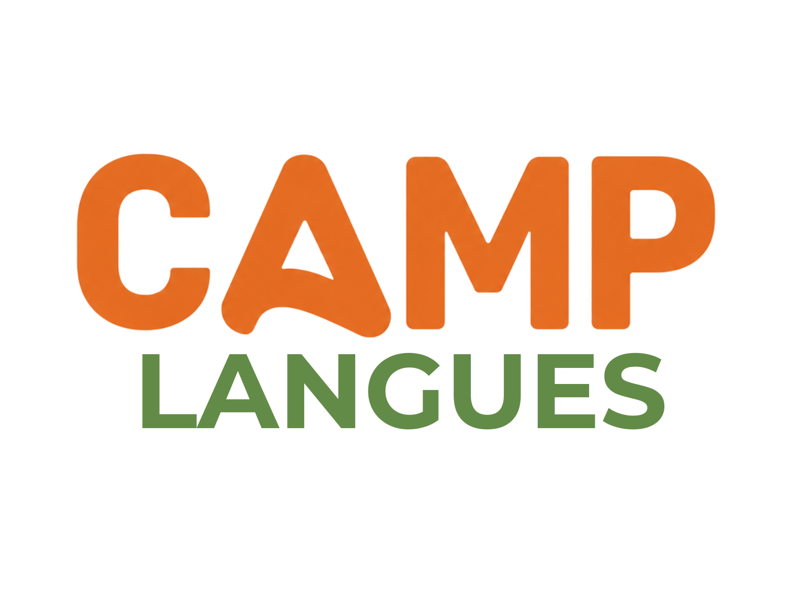

Communication
CAMP LANGUES
Apprendre une langue par l’oral, la pratique, les jeux, les situations concrètes et les projets.
Objectif : parler, comprendre, lire, écrire et utiliser la langue avec davantage de confiance.